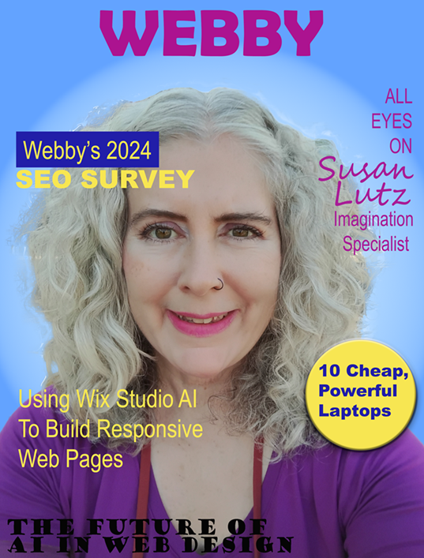

Photoshop - Magazine Cover
The purpose of the project was to design a fictional magazine cover featuring a made-up celebrity. I was directed to use a photograph for which I had rights, so I opted for one of my own images. To begin, I applied a mask to eliminate the background and substituted it with a radial gradient for the cover. The hair proved to be quite challenging, and I'm not entirely satisfied with the result, but I put forth my best effort. I drew inspiration from various real magazines to craft the headlines, incorporating embossing and drop shadows to enhance the visual appeal. Additionally, I utilized the patch tool to cover my right sleeve; where my skin was visible, I replaced it with purple shirt.
